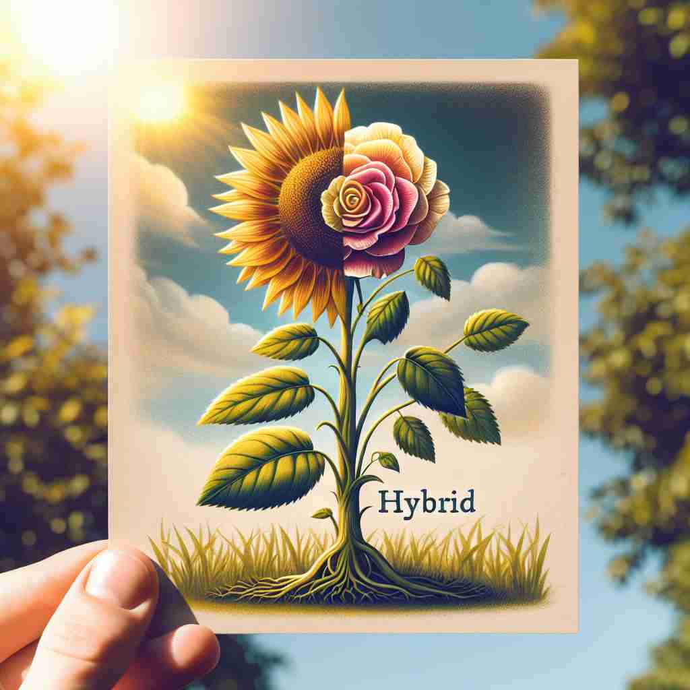

💬 This is a hybrid flower, combining a sunflower and a rose. 这是一种杂交花，结合了向日葵和玫瑰。

💬 This is a creative representation of a hybrid animal that combines a cat and a lion. 这是一种将猫和狮子结合在一起的混合动物的创意表现。
💬 This is a hybrid flower, combining a sunflower and a rose. 这是一种杂交花，结合了向日葵和玫瑰。
💬 This is a creative representation of a hybrid animal that combines a cat and a lion. 这是一种将猫和狮子结合在一起的混合动物的创意表现。
🧠 'Hybrid' 的核心含义是'混合'或'结合'。想象两种不同的事物被混合在一起，形成一个新的整体。这个概念最初用于生物学，后来扩展到技术、工作方式、语言等多个领域。记忆时，可以联想各种混合的例子，如杂交动植物、混合动力汽车等，这样有助于理解和记忆 'hybrid' 在不同语境下的应用。
🔈 ['haɪbrɪd]
🗝️ n./adj. something that is a mixture of two or more different things 一种由两种或更多不同事物混合而成的东西
🎭 在一个热闹的美食节上，人们纷纷围在一个摊位前。这个摊位展示了一种叫做 '融合煎饼' 的新奇食物，结合了法式薄饼和中式葱油饼的特点，让大家感受到美食文化的混合魅力。
💬 A mule is a hybrid of a donkey and a horse. 骡子是驴和马的杂交后代。
🌳 来自拉丁词 "hybrida" 意指混合或杂交物。在现代英语中，"hybrid" 指的是由不同来源、种类等混合而成的事物。
💡 可以把 "hybrid" 记忆为两种或多种事物的结合，想象一个混合动力车，结合了电力和汽油发动机。这个混合特性帮助你记住 "hybrid" 的含义。
🗝️ n. a plant or animal that has been produced from two different types of plant or animal 一种由两种不同类型的植物或动物繁殖而成的植物或动物
🎭 在一个广阔的植物园内，游客们对一种奇异的花朵赞叹不已。这种花名为 '异彩莲'，是通过两种不同种类的花卉杂交培育而成，它既有一种花的艳丽色彩，又有另一种花的独特形状。
💬 Scientists have developed a hybrid tomato that is more resistant to disease. 科学家们开发了一种对疾病更具抵抗力的杂交番茄。
🤔 最初用于生物学，描述两种不同物种的混合
🗝️ n. a vehicle that uses two different types of power, such as electricity and petrol 一种使用两种不同类型动力的车辆，例如电力和汽油。
🎭 在繁忙的城市街道上，一辆崭新的汽车安静地滑过。它既能利用汽油驱动，又能使用电力，是一辆混合动力车，节能环保，也有效缓解了交通噪音。
💬 Many people are now buying hybrid cars to save fuel and reduce emissions. 许多人现在购买混合动力汽车以节省燃料和降低排放。
🤔 延伸到科技领域，描述结合两种动力系统的车辆
🗝️ adj. combining two or more different things 结合两种或更多不同的事物
🎭 在一个创意工作坊中，设计师们正忙于设计一款结合了传统和现代元素的家具。他们使用天然木材搭配现代金属架构，创造出独特的新产品，吸引了众人的目光。
💬 The company has adopted a hybrid approach to working, combining office and remote work. 公司已经采取了混合工作方式，结合了办公室工作和远程工作。
🤔 广泛应用于各个领域，表示混合或结合的特性
🗝️ n. a word formed from elements taken from different languages 由来自不同语言的元素构成的词。
🎭 在一场语言学的讲座中，教授讲述了一些现代英语单词如何来源于多种语言的元素。比如 '电视'（television），来源于希腊语的 'tele' 和拉丁语的 'vision'，展示了跨文化语言混合的丰富性。
💬 The word 'television' is a hybrid, combining Greek and Latin elements. “电视”一词是一个混合词，结合了希腊和拉丁的元素。
🤔 应用于语言学，描述由不同语言元素组成的词